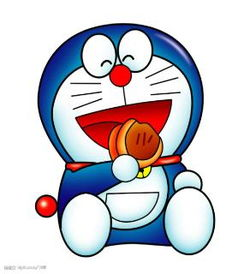

首页 > 哆啦A梦

哆啦A梦简介
名称:哆啦A梦
年龄: 17岁→19岁
星座：处女
血型： A型
生日：2112年9月3日
故乡：东海·风车村
身份：来自未来世界的猫型机器人
喜欢的食物：铜锣烧
别名：阿蒙、小铃铛、小叮当、思赖夫
最害怕：老鼠、冷天、热天
属性： 无发 天然呆 善良 理智 智慧 其他色皮肤 认真 黑色眼睛
人物分析：心肠好，乐于助人，但却心肠软。每次野比遇到困难，他总会帮野比。但有时会用愚蠢的方法来帮助野比。当机器猫吃不到红豆饼或人们叫他狸猫时，脾气会非常暴躁。
弱点:害怕老鼠。
人物介绍：哆啦a梦是一只来自未来世界的猫型机器人，用自己神奇的百宝袋和各种奇妙的道具帮助大雄解决各种困难。心肠好，乐于助人，做事很拼命（见2112年哆啦A梦诞生记）但却心肠软。每次大雄遇到困难，他总会帮大雄。
四次元口袋：这个口袋直接通往另一个世界,再多的东西也放得下。但是因为机器猫是一件次品，所以有时会找不到想要的工具。